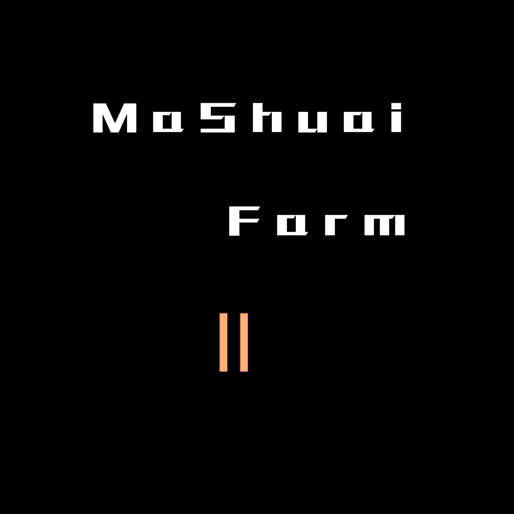
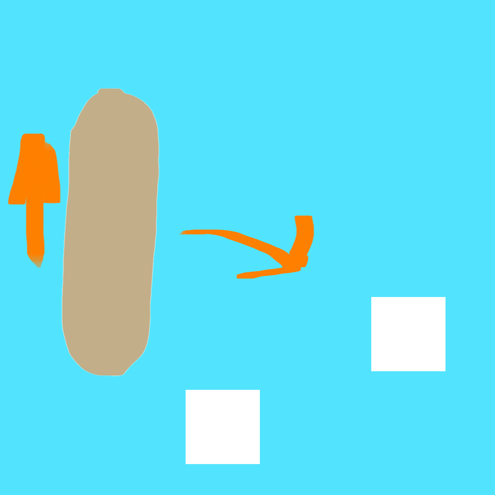
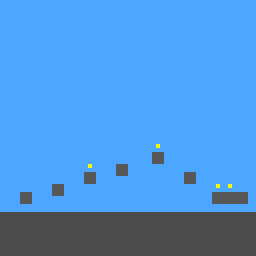

马帅工作室网站
网站基础信息
开发时间：2025.10.17
更新时间：2025.12.21
版本 beta0.0.9
马帅工作室官方网站，有相关马帅工作室的内容。本网站为中文网站
近期新闻
2025.12.21马帅养殖场2godot版发布alpha 0.3.5 build 1并发布首个网页版在itch上
2025.12.21洞穴跑酷发布0.0.16正式版，并更名Cave Parkour
2025.12.20马帅养殖场2godot版发布alpha 0.3.4正式版
2025.11.4-2025.11.5马帅养殖场2godot版alpha 0.3.1正式版发布至itch.io和github
2025.11.2马帅百科开始开发
2025.10.25正式宣布开始开发校长模拟器（headmaster simulator）demo版
2025.10.20马帅快快跑发布beta0.5.6正式版
2025.10.15马帅快快跑发布beta0.5正式版
2025.10.4马帅养殖场2godot版发布alpha 0.3.0正式版
爆料性新闻
洞穴跑酷在2026年2月将步入alpha版本
洞穴跑酷在0.0.16preview中更改为Cave Parkour
2025.11.6马帅百科将在2025.11中旬发布0.1版本
2025.10.29爆料：校长模拟器demo0.1.0 alpha将加入教学楼主体，由于主体是模型因此开发进度缓慢，预计11月中旬发布0.1.0 alpha，11月末发布demo0.1.0正式版
2025.10.26宣布alpha 0.3.2的更新目标为不三不四中学的修改
工作室游戏

马帅养殖场2godot版

马帅快快跑

洞穴跑酷